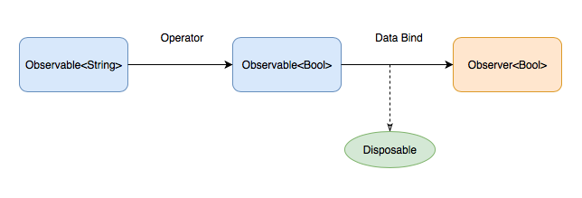

RxSwift 的核心组件
这一章主要介绍 RxSwift 的核心组件：

- Observable - 产生事件
- Observer - 响应事件
- Operator - 变化组合事件
- Disposable - 管理绑定（订阅）的生命周期
- Schedulers - 线程队列调配
// Observable<String>
let text = usernameOutlet.rx.text.orEmpty.asObservable()
// Observable<Bool>
let passwordValid = text
// Operator
.map { $0.characters.count >= minimalUsernameLength }
// Observer<Bool>
let observer = passwordValidOutlet.rx.isHidden
// Disposable
let disposable = passwordValid
// Scheduler 用于控制任务在那个线程队列运行
.subscribeOn(MainScheduler.instance)
.observeOn(MainScheduler.instance)
.bind(to: observer)
...
// 取消绑定，你可以在退出页面时取消绑定
disposable.dispose()
下面几节会详细介绍这几个组件的功能和用法。
ℹ️ 提示：这一章主要介绍一些偏理论方面的知识。你如果觉得阅读起来比较乏味的话，可以先快速地过一遍，了解 RxSwift 的核心组件大概有哪些内容。待以后遇到实际问题时，在回来查询。你可以直接跳到 更多例子 章节，去了解如何应用 RxSwift。